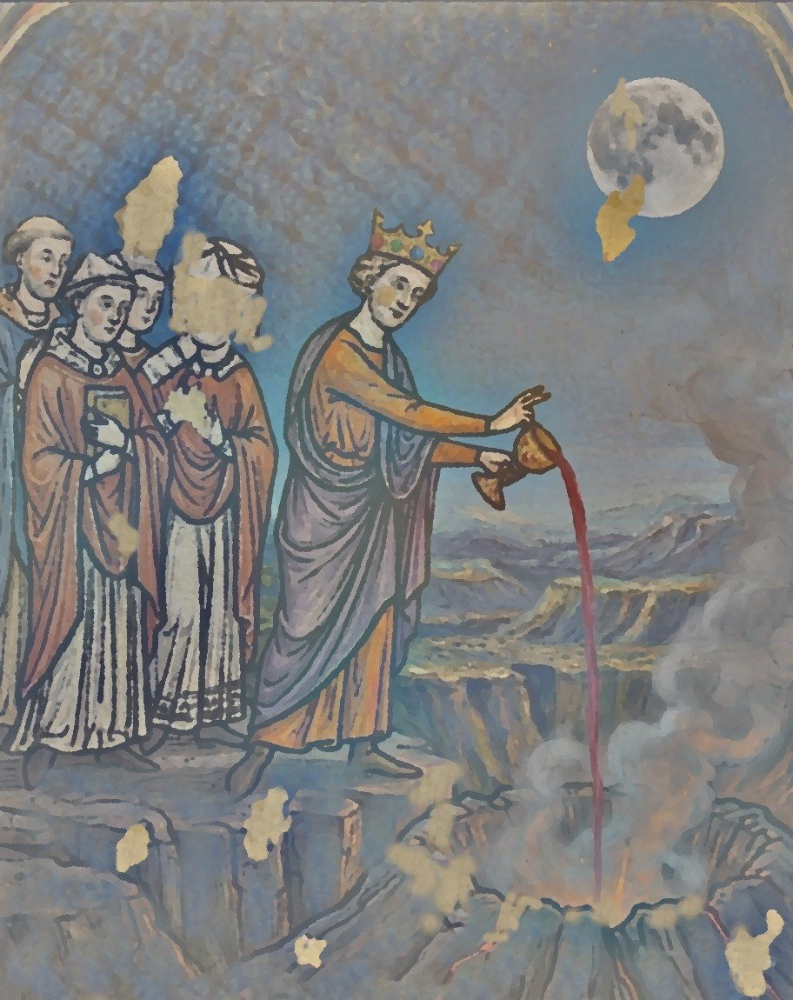

Accueil
Journal
Personnages
Quêtes
Carte
Histoire
Accueil
›
Carte
›
Le volcan Kiriadum
Le volcan Kiriadum

Le rituel du Vin de Vanaël, versé dans le volcan Kiriadum
Lieu du rituel du
Vin de Vanaël
(première pleine lune d'hiver).
Galeries inférieures occupées par des gobelins.
Selon la légende,
Ochlus
y est enfermé par
Wayland
.